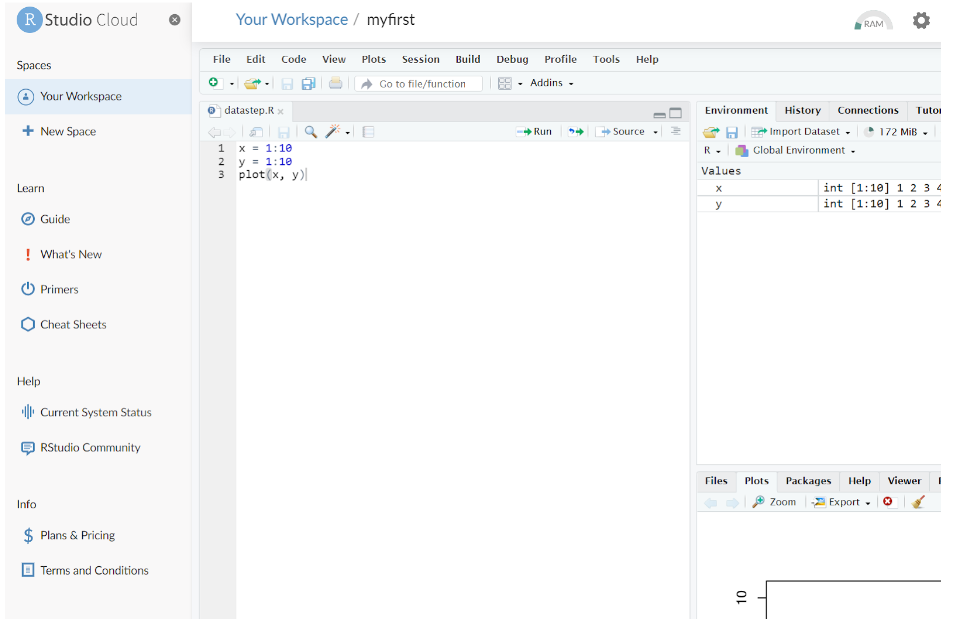
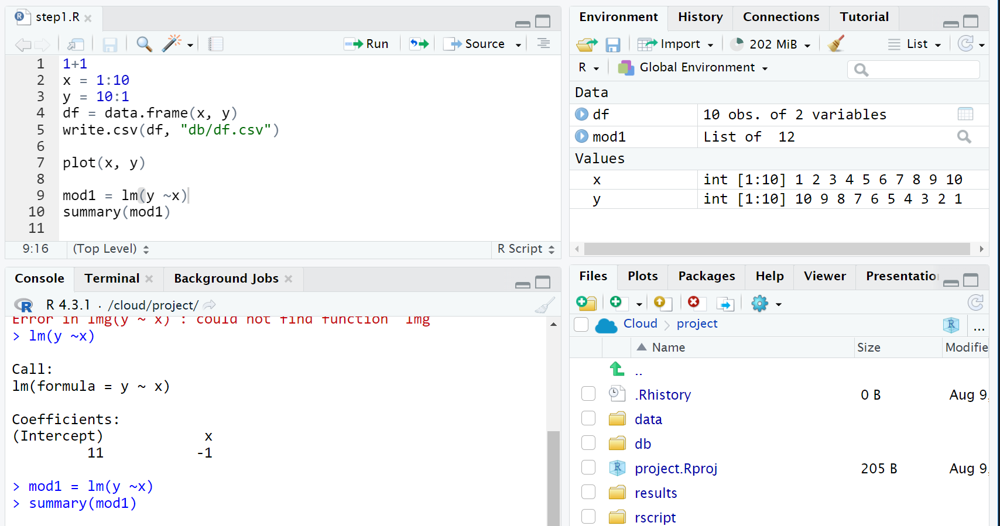
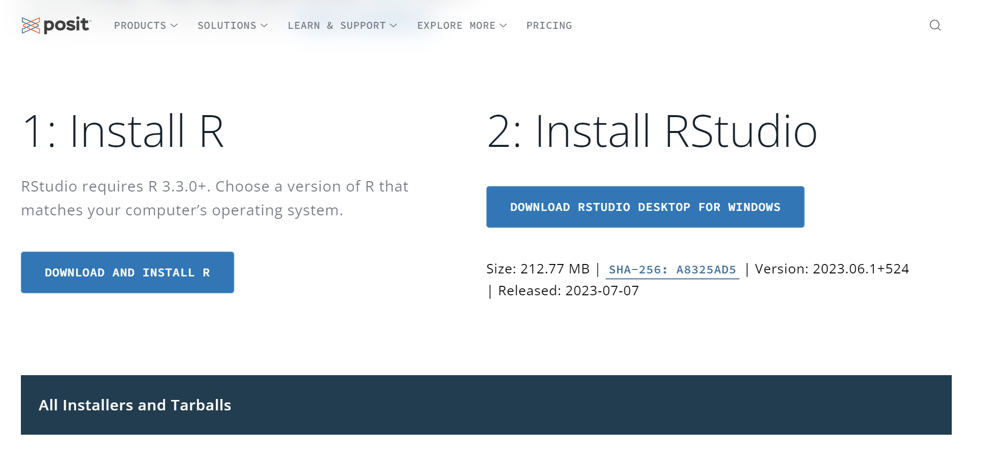

1 R & R studio 사용
본 실습에서 사용할 R와 R studio 를 설치하는 과정입니다.
여러 방법이 있지만 rstudio cloud 사용을 추천드립니다.
1.1 Rstudio Cloud
R studio cloud는 R과 R studio를 가장 빠르고 쉽게 사용할 수 있는 방법입니다. 다양한 옵션이 있으며, 무료 옵션도 포함되어 있습니다.
- Rstudio cloud 로그인 방법
- RStudio Cloud 에 접속합니다.
- 로그인을 합니다.
- New Project 를 실행합니다.
- 시작합니다.
아래 동영상으로 되어 있으니 참고하시기 바랍니다.


1.2 R and R studio on Window system
여기에서는 Windows 시스템에서 R과 R 스튜디오를 설치하는 방법을 설명합니다.
- 구글에서 R cran을 검색하세요.
- 아래와 같은 사이트가 나타날 것입니다.
- R을 다운로드 및 설치하기를 클릭하세요.
- Windows용 R 다운로드하기
- Base → Install R for the first Time
- Download R * for Windows

1.2.1 R studio install
R 스튜디오 설치는 정말 쉽습니다. Rstudio 로 검색한 다음 아래의 사이트에 들어갑니다. https://posit.co/download/rstudio-desktop/

여기서 R studio 를 클릭해서 다운로드 후 설치하면 됩니다.
1.2.2 R studio project
R 스튜디오는 프로젝트 옵션을 제공합니다. 프로젝트는 데이터와 스크립트를 가져오고 내보내는 기본 경로를 만듭니다. 프로젝트를 공유할 때 협업이 쉬워집니다.
저는 또한 흔히 사용되는 기본 디렉토리를 권장합니다. 이것은 동료와 아이디어를 공유하는 또 다른 규칙입니다.
우리가 Windows 시스템을 사용하더라도 복사 및 이동과 같은 기본 명령은 코딩 프로세스를 용이하게 만드는 데 필요합니다. 아래 동영상을 보세요
네, 이제 R 코딩을 시작할 준비가 되었습니다.
1.3 R and R studio on Ubuntus
우분투스 서버에 R을 설치하는 과정입니다. 아마존, 구글클라우드등 서버에 설치할때 아래의 동영상을 따라해 주세요. 필요한 분만 하시면 됩니다. 여러 복잡한 과정이 있으니, 아래의 구글 docs를 보고 따라해 주세요.
참고 동영상
Google Doc
Google Doc Download